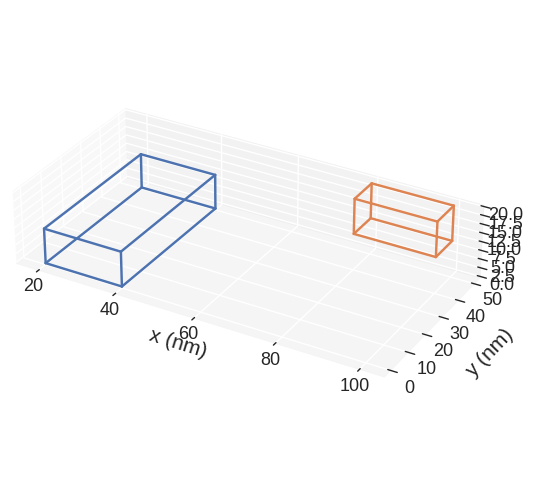
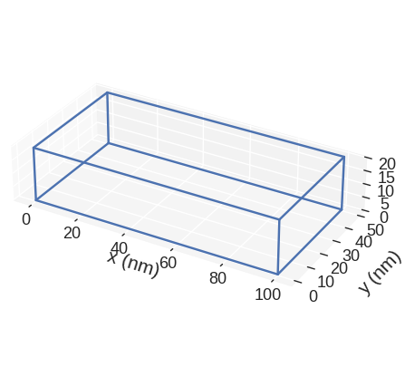
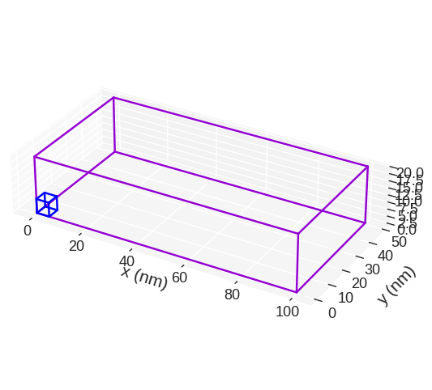
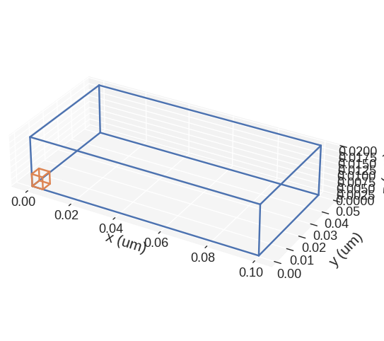
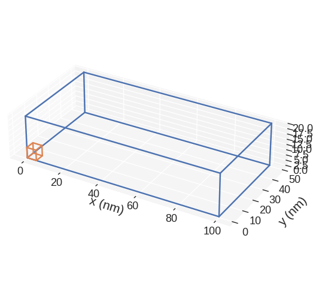
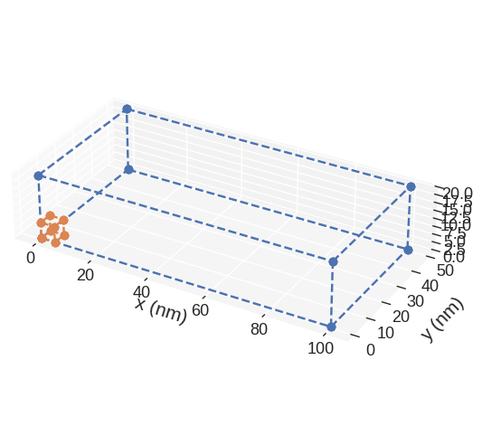
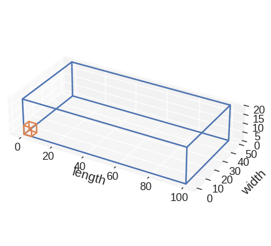

Mesh visualisation#
We are now going to have a look at different mesh visualisation options. We are going to use the following mesh with two subregions:
[1]:
import discretisedfield as df
p1 = (0, 0, 0)
p2 = (100e-9, 50e-9, 20e-9)
n = (20, 10, 4)
subregions = {
"subregion_1": df.Region(p1=(20e-9, 0, 0), p2=(40e-9, 50e-9, 10e-9)),
"subregion_2": df.Region(p1=(80e-9, 40e-9, 10e-9), p2=(100e-9, 50e-9, 20e-9)),
}
region = df.Region(p1=p1, p2=p2)
mesh = df.Mesh(region=region, n=n, subregions=subregions)
Same as the region object, there are two main ways how we can visualise mesh in discretisedfield:
Using
matplotlib(static 2D plots, usually with some tricks to make them look 3D)Using
pyvista(interactive 3D plots)
All matplotlib method names start with mpl, whereas all pyvista plots start with pyvista. We will first have a look at simple plotting using both matplotlib and pyvista and later look at how we can pass different parameters to change them.
Basic plotting#
To get a quick matploltlib “3D” plot of the mesh, we call mpl:
[2]:
mesh.mpl()

In order to view the subregions we can call:
[3]:
mesh.mpl.subregions()

mpl plots two cubic regions. The larger one corresponds to the region and the smaller one to the discretisation cell. Without passing any parameters to mpl function, some default settings are chosen. We can see that matplotlib is not good in showing the right proportions of the region. More precisely, we know that the region is much thinner in the z-direction, but that is not the impression we get from the plot. This is the main disadvatage of mpl.
Now, we can ask our region object for an interactive pyvista plot:
[4]:
mesh.pyvista()
Similar to the mpl plot, we can see the region as well as the discretisation cell in this plot. This can be useful to get an impression of the discretisation cell size with respect to the region we discretise. pyvista plot is an interactive plot, which we can zoom, rotate, etc. In addition, a small contol panel is shown in the top-right corner, where we can modify some of the plot’s properties.
Advanced plotting#
Here we explore what parameters we can pass to mpl and pyvista functions. Let us start with mpl.
mpl#
The default plot is:
[5]:
mesh.mpl()

If we want to change the figure size, we can pass figsize parameter. Its value must be a lenth-2 tuple, with the first element being the size in the horizontal direction, whereas the second element is the size in the vertical direction.
[6]:
region.mpl(figsize=(10, 5))

The color of the lines depicting the region and the discretisation cell we can choose by passing color argument. color must be a lenght-2 tuple which consists of valid matplotlib colours. For instance, it can be a pair of RGB hex-strings (online converter). The first element is color is the colour of the region, whereas the second element is the colour of the discretisation cell.
[7]:
mesh.mpl(color=("#9400D3", "#0000FF"))

discretisedfield automatically chooses the SI prefix (nano, micro, etc.) it is going to use to divide the axes with and show those units on the axes. Sometimes (e.g. for thin films), discretisedfield does not choose the SI prefix we expected. In those cases, we can explicitly pass it using multiplier argument. multiplier can be passed as \(10^{n}\), where \(n\) is a multiple of 3 (…, -6, -3, 0, 3, 6,…). For instance, if multiplier=1e-6 is passed, all axes will be
divided by \(1\,\mu\text{m}\) and \(\mu\text{m}\) units will be used as axis labels.
[8]:
mesh.mpl(multiplier=1e-6)

If we want to save the plot, we pass filename, mesh plot is going to be shown and the plot saved in our working directory as a PDF.
[9]:
mesh.mpl(filename="my-mesh-plot.pdf")

mpl mesh plot is based on `matplotlib.pyplot.plot function <https://matplotlib.org/3.2.1/api/_as_gen/matplotlib.pyplot.plot.html>`__. Therefore, any parameter accepted by it can be passed. For instance:
[10]:
mesh.mpl(marker="o", linestyle="dashed")

Finally, we show how to expose the axes on which the mesh is plotted, so that we can customise them. We do that by creating the axes ourselves and then passing them to mpl function.
[11]:
import matplotlib.pyplot as plt
# Create the axes
fig = plt.figure(figsize=(8, 5))
ax = fig.add_subplot(111, projection="3d")
# Add the region to the axes
mesh.mpl(ax=ax)
# Customise the axes
ax.set_xlabel("length")
ax.set_ylabel("width")
ax.set_zlabel("height")
[11]:
Text(0.5, 0, 'height')

This way, by exposing the axes and passing any allowed matplotlib.pyplot.plot argument, we can customise the plot any way we like (as long as it is allowed by matplotlib).
pyvista#
Default pyvista plot is:
[12]:
mesh.pyvista()
If we want to change the color, we can pass color argument. It is a length-2 tuple of integer hexadecimal colours. The first number in the tuple is the colour of the first subregion and the second colour is the colour of the second subregion.
[13]:
mesh.pyvista(color=("#9400D3", "#0000FF"))
We can turn the wireframe on and off by passing wireframe to pyvista
[14]:
mesh.pyvista(wireframe=False)
The cell can be removed by
[15]:
mesh.pyvista(cell=False)
The cell’s colour can be changed with
[16]:
mesh.pyvista(cell_color="red")
Passing cell_kwargs allows further customisation by internally passing arguments to the pyvista.plotter.add_mesh when plotting the discretisation cell
[17]:
mesh.pyvista(cell_kwargs={"opacity": 0.5})
Similar to the mpl plot, we can change the axes multiplier.
[18]:
mesh.pyvista(multiplier=1e-6)
pyvista plot is based on pyvista, so any parameter accepted by it can be passed. For instance:
[19]:
mesh.pyvista(opacity=0.5)
We can also expose pyvista.Plotter object and customise it.
[20]:
import pyvista as pv
# Expose plot object
plotter = pv.Plotter()
# Add region to the plot
mesh.pyvista(plotter=plotter)
# Modify the plotter - in this case we add a ruler
plotter.add_ruler(pointa=(0, 0, 20), pointb=(100, 50, 20))
# Display the plot
plotter.show()
This way, we can modify the plot however we want (as long as pyvista allows it).